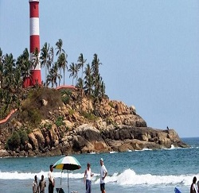
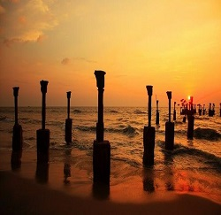
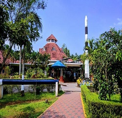

The Kadalur Point Lighthouse is situated in Kadalur, near Koyilandy in Kozhikode district on the coast of Arabian sea in India. The circular stone masonry tower has a height of 34 meters. The tower is painted with black and white bands. The lighthouse started its operation in 1907.
Read moreKozhikode Beach or Calicut Beach is a beach on the western side of Kozhikode, situated on the Malabar Coast of India. The beach is accessible through four road overbridges in the city. The beach has paved stones and illumination. There is one Lions Park for the children and an aquarium.
Read moreMananchira is a man-made freshwater pond situated in the centre of the city of Kozhikode in Kerala, southern India. The pond is 3.49 acres (14,120 m2) in area, is rectangular in shape and is fed by a natural spring
Read more